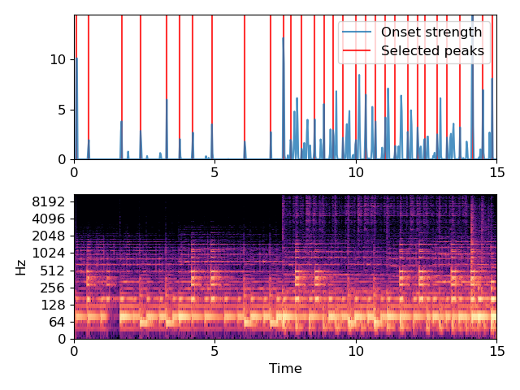

librosa.util.peak_pick¶
-
librosa.util.peak_pick(x, pre_max, post_max, pre_avg, post_avg, delta, wait)[source]¶ Uses a flexible heuristic to pick peaks in a signal.
A sample n is selected as an peak if the corresponding x[n] fulfills the following three conditions:
x[n] == max(x[n - pre_max:n + post_max])
x[n] >= mean(x[n - pre_avg:n + post_avg]) + delta
n - previous_n > wait
where previous_n is the last sample picked as a peak (greedily).
This implementation is based on [1] and [2].
- 1
Boeck, Sebastian, Florian Krebs, and Markus Schedl. “Evaluating the Online Capabilities of Onset Detection Methods.” ISMIR. 2012.
- 2
https://github.com/CPJKU/onset_detection/blob/master/onset_program.py
- Parameters
- xnp.ndarray [shape=(n,)]
input signal to peak picks from
- pre_maxint >= 0 [scalar]
number of samples before n over which max is computed
- post_maxint >= 1 [scalar]
number of samples after n over which max is computed
- pre_avgint >= 0 [scalar]
number of samples before n over which mean is computed
- post_avgint >= 1 [scalar]
number of samples after n over which mean is computed
- deltafloat >= 0 [scalar]
threshold offset for mean
- waitint >= 0 [scalar]
number of samples to wait after picking a peak
- Returns
- peaksnp.ndarray [shape=(n_peaks,), dtype=int]
indices of peaks in x
- Raises
- ParameterError
If any input lies outside its defined range
Examples
>>> y, sr = librosa.load(librosa.util.example_audio_file(), duration=15) >>> onset_env = librosa.onset.onset_strength(y=y, sr=sr, ... hop_length=512, ... aggregate=np.median) >>> peaks = librosa.util.peak_pick(onset_env, 3, 3, 3, 5, 0.5, 10) >>> peaks array([ 4, 23, 73, 102, 142, 162, 182, 211, 261, 301, 320, 331, 348, 368, 382, 396, 411, 431, 446, 461, 476, 491, 510, 525, 536, 555, 570, 590, 609, 625, 639])
>>> import matplotlib.pyplot as plt >>> times = librosa.times_like(onset_env, sr=sr, hop_length=512) >>> plt.figure() >>> ax = plt.subplot(2, 1, 2) >>> D = librosa.stft(y) >>> librosa.display.specshow(librosa.amplitude_to_db(D, ref=np.max), ... y_axis='log', x_axis='time') >>> plt.subplot(2, 1, 1, sharex=ax) >>> plt.plot(times, onset_env, alpha=0.8, label='Onset strength') >>> plt.vlines(times[peaks], 0, ... onset_env.max(), color='r', alpha=0.8, ... label='Selected peaks') >>> plt.legend(frameon=True, framealpha=0.8) >>> plt.axis('tight') >>> plt.tight_layout() >>> plt.show()
